Archive
Every Monday since December 27, 2010
Each square is a Monday. The ones with cover art are the Mondays a mix went out.
2014 to 2025
The quiet years626 Mondays without a mix
2026
Browse
Find a mix
Search by mix name, artist, song or year.
Showing all 36 mixes.
 Thirtyfourth
New week, new mix. A little birdy from the mountains had to prod me to post this today.
Thirtyfourth
New week, new mix. A little birdy from the mountains had to prod me to post this today.
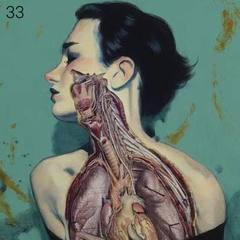
Thirtythird As always, back after a fairly long period of absence. MMM isn’t dead, not just yet. Thirtysecond
Brand new mix at a brand new address. New Postal Service demo, a fantastic AlunaGeorge track and some other surprises.
Thirtyfirst
First mix of 2013! There’s been a lot of good music that has been listened to while I was gone. Someone asked me to put a mix out today, so here it is.
Thirtysecond
Brand new mix at a brand new address. New Postal Service demo, a fantastic AlunaGeorge track and some other surprises.
Thirtyfirst
First mix of 2013! There’s been a lot of good music that has been listened to while I was gone. Someone asked me to put a mix out today, so here it is.
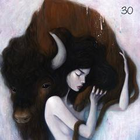
Thirtieth Late. Twentyninth
Finally! I’m making a habit out of this aren’t I? But the truth is, I’ve heard so much awful music of late that I haven’t been compelled to put out a mix. That, and trips back home and everything in between. I’m going to try and make this a fortnightly affair but my other pet project completes three years on the 19th, so there’s plenty on my plate and simply not enough clones.
Twentyninth
Finally! I’m making a habit out of this aren’t I? But the truth is, I’ve heard so much awful music of late that I haven’t been compelled to put out a mix. That, and trips back home and everything in between. I’m going to try and make this a fortnightly affair but my other pet project completes three years on the 19th, so there’s plenty on my plate and simply not enough clones.
 Twentyeighth
It’s been a busy couple of weeks. I moved to New Delhi not too long ago and I’m still in the middle of rebuilding my life here. I haven’t heard a lot of exceptional music, unfortunately (given the lack of time at hand). But this will have to do, for now.
Twentyeighth
It’s been a busy couple of weeks. I moved to New Delhi not too long ago and I’m still in the middle of rebuilding my life here. I haven’t heard a lot of exceptional music, unfortunately (given the lack of time at hand). But this will have to do, for now.
 Twentyseventh
It’s been a while since I did a doubleheader. So there you have it, fourteen instead of the usual seven. For an exceptional week, and everything else that goes with it.
Twentyseventh
It’s been a while since I did a doubleheader. So there you have it, fourteen instead of the usual seven. For an exceptional week, and everything else that goes with it.
 Twentysixth
For you.
Twentysixth
For you.
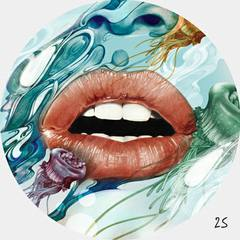
Twentyfifth I am home.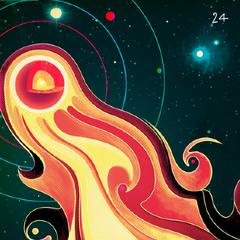
Twentyfourth This is getting a bit irregular, isn’t it? The last six weeks have been hellishly busy to say the least. I’ve heard plenty of great music, and it was hard to narrow it down to just seven tracks. Hopefully this will do. Twentythird
So after four odd months of absence, MMM is back. With a bang? Probably not.
Twentythird
So after four odd months of absence, MMM is back. With a bang? Probably not.
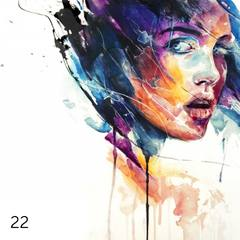
Twentysecond This is the sequel (sort of) to the eighteenth mix. A friend asked for it, and I got carried away. Yes, some artists are a bit mainstream, some tracks are done to death, but that’s not the point. Twentyfirst
For once, on time. I think this mix is pretty interesting. Lots of diverse beats - lots of trippy goodness. Listen, spread the love and all that.
Twentieth
A mix after a month, and then some. As always, compensating for the lack of regular updates, a fourteen track mix to keep you swell folks happy.
Twentyfirst
For once, on time. I think this mix is pretty interesting. Lots of diverse beats - lots of trippy goodness. Listen, spread the love and all that.
Twentieth
A mix after a month, and then some. As always, compensating for the lack of regular updates, a fourteen track mix to keep you swell folks happy.
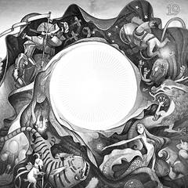
Nineteenth Late yet again, but that’s only because I’ve been neck deep in work. And, I celebrated my birthday last weekend. Still hungover a bit, but life’s swell.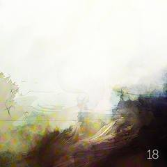
Eighteenth A Monday mix to give you the blues.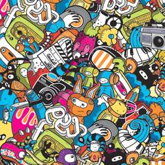
Seventeenth I’ve been busy like never before. Dealing with crises, a sea of emotions and that sinking feeling. But life goes on, and so must the show.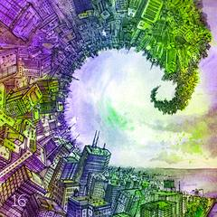
Sixteenth - The Covers Edition I wanted to add a bit of detail and provide links to the originals, but I guess that will have to wait. Busy day. But listen to these songs well. All of these are handpicked brilliant covers, some in the same vein as the originals, some even better. More description to follow later.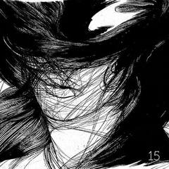
Fifteenth Not much to say, new mix within a span of a week. Enjoy.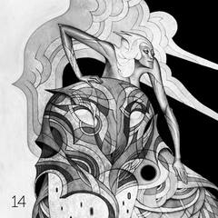
Fourteenth I’m not eloquent with words so I’m not even going to try - but my sincere apologies to all the wonderful folks who tune in religiously every week expecting a great mix. I know I have been extremely late with this week’s mix and it is for a good reason. I think personal crisis trumps everything else. Last couple of days have been the toughest of my life so far (I’m not going to go into details now) - so I just needed some time off to introspect, think hard and make some tough decisions. While not yet completely resolved, I will get there in a couple of days.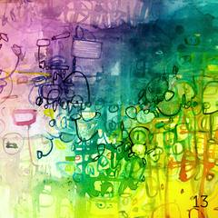
Thirteenth I’m getting a bit lethargic after long weekends, which is why these mixes are getting posted this late. However there’s a silver lining - with this laziness, I do get to sample some excellent music - and this week’s mix is as eclectic as it gets. Some very interesting styles being covered in this one.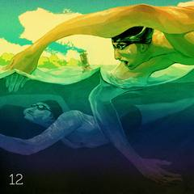
Twelfth Welcome to Monday Music Mix - Crowdsourced edition! This week’s mix features some great tracks, handpicked by some of you. A big thanks to Nitin, Ananya, Joogz, fine_whining, Coke, and Cyrus for some fantastic suggestions. I haven’t been able to feature all the excellent music that was suggested last week (sorry Shreyansh, jigabachi and others) - but I promise to feature it in coming weeks - please bear with me :) Eleventh Wow, this has been a tough one. Selecting songs, selecting art - it’s never been this difficult. I’ve tried to mix it up a bit, and sadly I’ve sort of gone with the popular route a bit. You might recognize some songs, and if you do - I apologize for failing in my attempt to introduce you to some new bits of music. At the end of the day, you win some, you lose some.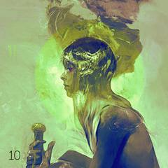
Tenth Okay, YOU WIN! So after a week of badgering and constant protests, I’ve decided to continue. For now. Ninth
This is probably going to be the last one. Seems nobody gives a shit about interesting music - thus defeating the goal of starting this blog. Was fun while it lasted.
Ninth
This is probably going to be the last one. Seems nobody gives a shit about interesting music - thus defeating the goal of starting this blog. Was fun while it lasted.
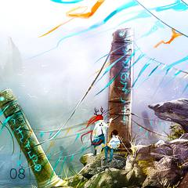
Eighth And we’re back with yet another edition of MMM! Seventh
Another week, another mix.
Seventh
Another week, another mix.
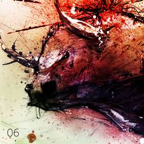
Sixth Hoppy Chinese New Year folks! Yes, there’s still a couple of days left, but it’ll be a bit too late by the time the next mix is up, so I figured might as well wish my (five odd) readers. No - it’s not a typo. 2011 is the year of the rabbit - see what I did there?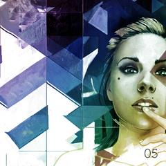
Fifth Another busy weekend gone by. I’ve lost track of time and it’s hard to tell apart the days. This is a perfect mix to get anyone through the start of the week. And maybe more.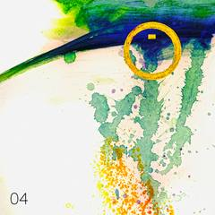
Fourth This has been the toughest mix to put together. Three days of work, very little sleep and time.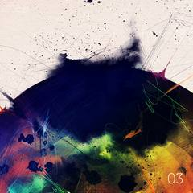
Third As promised last time, here’s the third edition uploaded, much before the end of the day.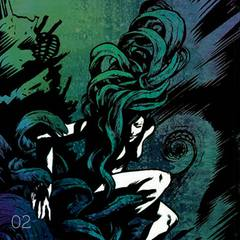
Second Happy new year, everyone! I know I am bending the rules a little by putting up the mix when Monday is almost over - but blame it on having a full time job and the ever so clichéd Monday blues.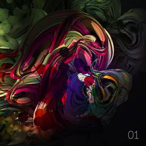
First And so it begins! Monday Music Mix is a project close to my heart - something that has been in the works for quite some time (in my head, of course).No matches
Nothing matches that. Try a different word, or clear the search to see every mix.